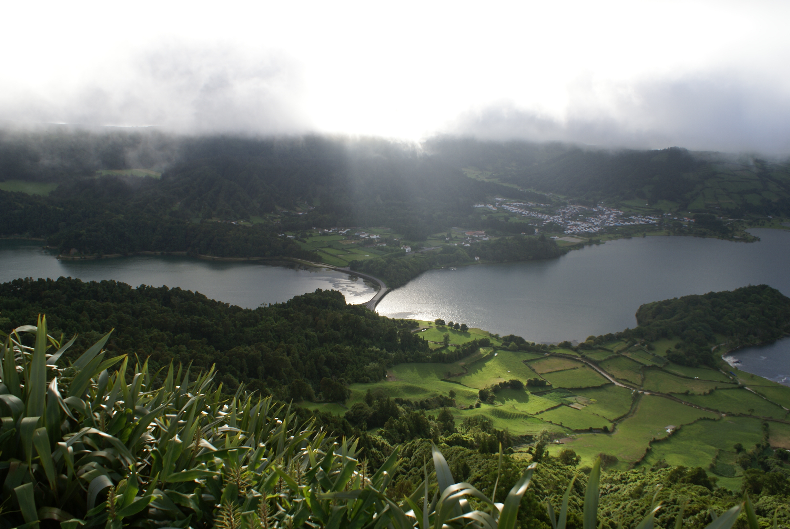
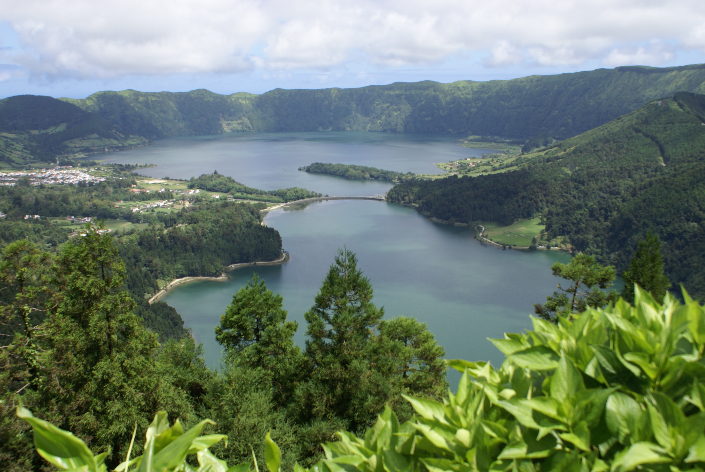

The viewpoint of Boca do Inferno has one of the most astounding
landscapes of the island, in part because of it's altitude (about 1000 meters).
From there it's possible to see the Canário lagoon, the Sete Cidades lagoons, the Rasa lagoon,
part of the parish of Sete Cidades and some of the Serra Devassa. This viewpoint is envolved
by a natural landscape where the endemisms caracteristic of the Maraconesia (designation of the islands present
at the north atlantic regin, close to Europe and Africa) are in abundancy.

The viewpoint of Cerrado das Freiras ofers an panoramic perspective of the Sete Cidades lagoon and it's surroundings. The viewpoint is located at the downhill of the montain, on the way to the parish of Sete Cidades. As the others viewpoints of the are, it ofers an stunning view to the traveler which has the amazing oportunity to visit and exploring it. 
The viewpoint of Vista Do Rei is another localization which deserves an important spotlight in this group of natural wonders which can be visited in the surroundings of the parish of Sete Cidades. Marking the start of a track, this viewpoint has another phenomenal view directed to the lagoons. Additionaly, the viewpoint has this name due to the fact of being an localization visited by the king D.Carlos of Portugal, at 6 of july, 1901. Possibly the most famous viewpoint on the foreign people point of view, due precisely to the already mentionated fact of being at the origin of a track of dirt which follows a vast extension, (See Tracks) where it's possible to watch not only the lagoons, but the Caldeira Seca e do Alferes as well. 